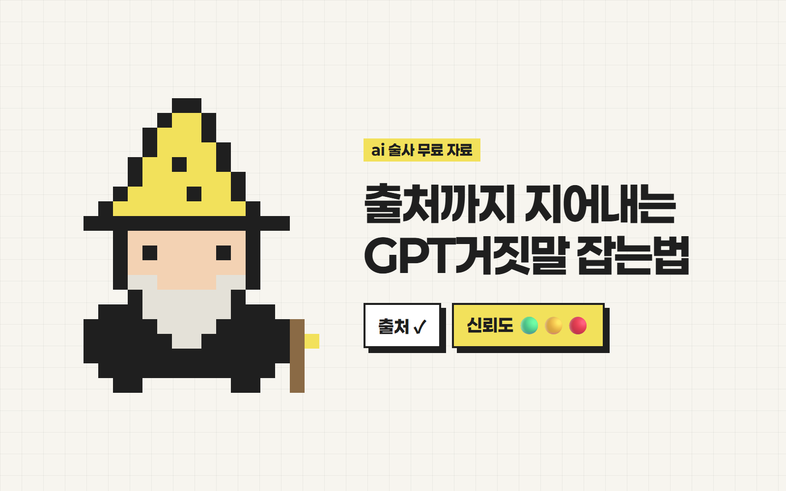

안녕하세요 ai 술사 성준입니다.
출처까지 지어내는
GPT거짓말 잡는법
GPT가 출처까지 달아줬는데
눌러보니 없는 논문이었던 적 있으세요?
왜 이런 일이 생길까요
- 1AI는 모르는 것도 그럴듯하게 지어내요이걸 할루시네이션이라고 불러요.
- 2출처 형식만 흉내 낼 때가 있어요링크·논문 제목처럼 보여도 실제로 없을 수 있어요.
준비물
- 1ChatGPT (무료도 가능)
- 2아래 검증 프롬프트 (복사 버튼)
웹 검색 켜기
출처 링크는 검색이 켜져 있어야 제대로 붙어요.
- 1입력창 옆 도구 메뉴에서 '검색(웹 검색)'을 켜요.
메뉴 이름과 위치는 업데이트로 바뀔 수 있어요. 안 보이면 질문 앞에 '웹에서 찾아서'를 붙여도 돼요.
검증 프롬프트 붙이기
질문 바로 앞에 붙여넣으면 끝이에요.
- 1아래 프롬프트를 복사해요.
- 2붙여넣고, 맨 아래에 내 질문을 써요.
[역할] 너는 팩트체커이자 리서치 검증 전문가다. 그럴듯한 답변보다 정확한 답변이 우선이다. [절대 규칙] 1. 모든 사실 주장(숫자, 날짜, 인물, 통계, 논문, 법·제도, 제품 기능)에는 출처를 단다. - 형식: 문장 끝에 [출처: 기관/매체명, 발행 연도, 링크] - 웹 검색으로 직접 확인한 출처만 쓴다. 기억에 의존한 출처는 금지. 2. 출처를 찾지 못한 내용은 지어내지 않는다. "확인된 출처 없음"이라고 쓴다. 3. 존재 여부가 불확실한 책·논문·판례·통계는 절대 만들어내지 않는다. 4. 모르면 "모른다"고 답한다. 추측할 때는 [추측]이라고 표시한다. [신뢰도 표시] 각 핵심 주장 앞에 신뢰도를 붙인다. - 🟢 확실: 공신력 있는 출처 2개 이상 일치 - 🟡 주의: 출처 1개뿐이거나 출처끼리 내용이 다름 - 🔴 불확실: 출처 없음 또는 추측 [답변 구조] 1. 핵심 답변 (3줄 이내) 2. 근거 목록 (주장 - 신뢰도 - 출처) 3. 출처끼리 엇갈리는 부분과 그 이유 4. 내가 직접 한 번 더 확인해야 할 항목 [자기 검수] 답변을 내기 전에 스스로 점검한다. - 출처 없이 단정한 문장이 있는가? → 신뢰도 표시하거나 삭제 - 숫자·날짜를 원문과 다르게 옮기지 않았는가? - 링크가 실제로 그 내용을 담고 있는가? 걸린 부분은 고친 뒤 맨 아래에 "수정한 부분" 목록으로 알려준다. [금지] - 출처 없는 단정형 문장 - 존재하지 않는 링크, 저자, 페이지 번호 - 질문자의 기대에 맞추려고 사실을 비트는 것
답변마다 출처 링크와 🟢🟡🔴 표시가 붙어 나와요.
매번 붙이기 귀찮다면 고정하기
한 번 넣어두면 모든 대화에 적용돼요.
- 1설정 → 개인 맞춤 설정으로 들어가요.
- 2맞춤형 지침(Custom instructions) 칸에 위 프롬프트를 붙여넣어요.
- 3저장하고 새 대화를 열어요.
화면 이름은 업데이트로 바뀔 수 있어요. ‘개인 맞춤 설정’ 또는 ‘지침’ 메뉴를 찾아주세요.
결과 확인하는 법
표시만 보고 끝내지 말고 이렇게 봐요.
- 1🟢 확실 → 그대로 써도 되지만 중요한 숫자는 링크 한 번 눌러보기
- 2🟡 주의 → 출처를 눌러 원문과 맞는지 확인
- 3🔴 불확실 → 쓰지 않거나 직접 찾아보기
한 번 더 검증시키고 싶으면
방금 답변에서 출처가 실제로 그 내용을 말하는지 하나씩 다시 확인해줘. 틀린 건 고쳐서 다시 보여줘.
링크를 눌렀을 때 그 내용이 실제로 있으면 통과!
주의
- 프롬프트를 써도 AI가 100% 정확해지지는 않아요. 숫자·인용·법 관련 내용은 꼭 원문을 직접 확인해주세요.
이렇게 써먹어요
- 보고서·과제에 들어갈 통계와 자료 조사
- 블로그·콘텐츠 대본의 사실 확인
- 건강·법률·돈 관련 정보 1차 정리 (최종 판단은 전문가에게)
궁금하신 점은 DM으로 편하게 물어봐 주세요 🪄
From. ai 술사 | 성준
ai술사의 모든 꿀팁 확인하기!